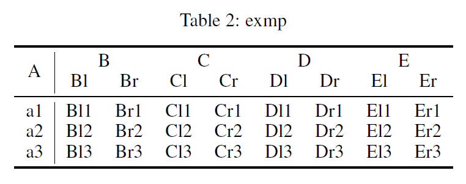
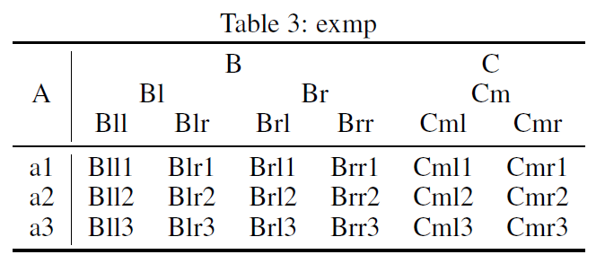
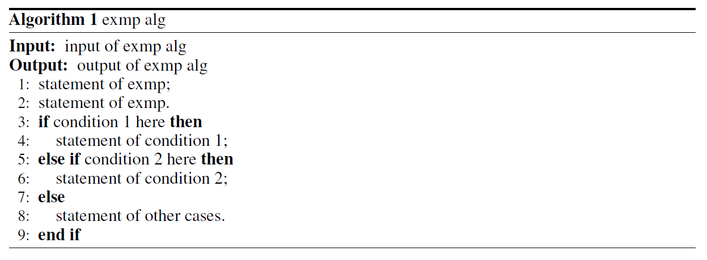
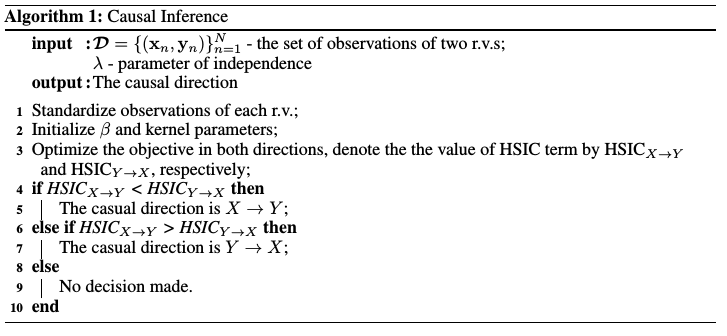
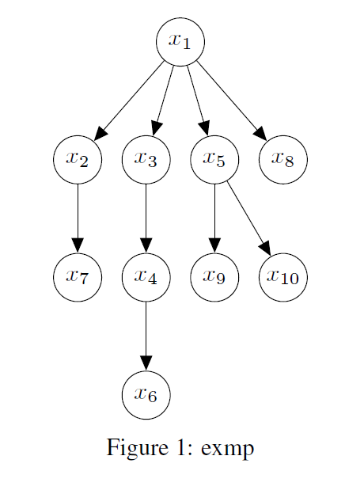
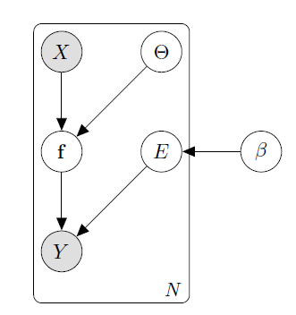

This post collects the LaTeX codes of different types of floats (figures, tables, algorithms and graphs) for convenience.
Figures
Simple insertion
1 | \usepackage{graphicx} |
Figure across columns
1 | \usepackage{graphicx} |
Figure of half width
1 | \usepackage{graphicx} |
Multiple figures
Put several figures together. Below is the code of organizing 6 figures in 3 rows and 2 columns.
1 | \usepackage{graphicx} |
Tables
Simple table
1 | \usepackage{booktabs} |
Results
Complex heading
1 | \usepackage{booktabs} |
Results

1 | \usepackage{booktabs} |
Results

Algorithms
Use package algorithm and algorithmic.
1 | \usepackage{algorithm} |
Results

Use package algorithm2e
1 | \usepackage[ruled,linesnumbered]{algorithm2e} |
Results

Graphs
The following examples adopt TikZ package for drawing graphs directly in .tex file.
Directed acyclic graph
1 | \usepackage{tikz} |
Results

Graphical model
1 | \begin{figure}[t] |
Results
